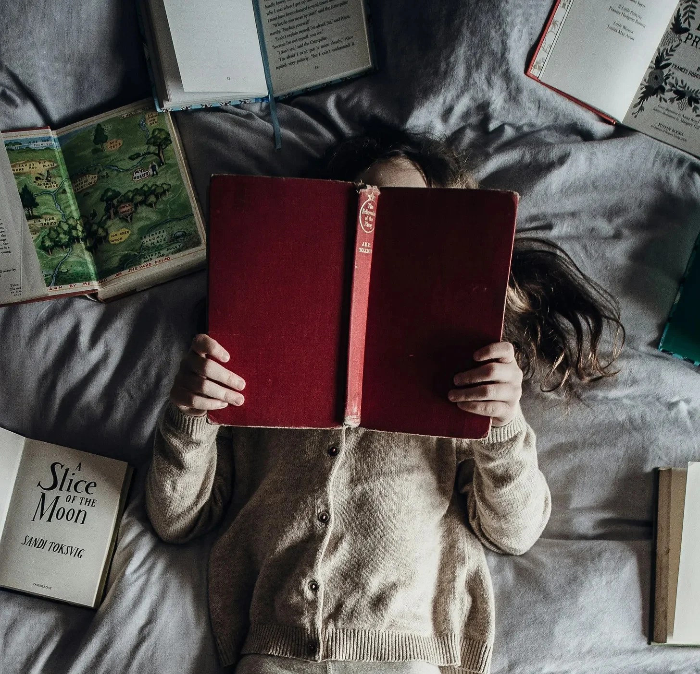

상상해봐, 누군가의 인생을 매 순간마다 따라다니는 거야—보이지 않지만 항상 곁에 있는 그림자처럼. 그 사람이 첫걸음을 내딛을 때, 첫 학교에 들어가며 떨리는 순간, 또는 사랑하는 사람과 작별을 해야 하는 그 씁쓸한 순간까지, 네가 그들과 함께 있는 거야. 네 눈앞에서 아이였던 그들이 걸음을 배우고, 청소년 시절 첫사랑과 이별을 겪고, 성인이 되어 수많은 시련과 성공을 마주하는 걸 지켜본다고 생각해봐. 그들이 성장하고, 실수하고, 사랑에 빠지고, 모든 걸 잃고 다시 일어섰다가 또다시 무너질지도 몰라. 모든 가슴 아픈 순간, 작은 승리, 아무도 지켜보고 있지 않다고 생각하는 그들의 조용한 순간들까지 네가 다 본다면, 분명 뭔가를 배울 수 있지 않을까? 너는 세상을 다르게 볼 거야. 네 머릿속에 있지도 않았던 새로운 아이디어가 불쑥 떠오를지도 몰라.
이제 한 발 더 나아가 보자. 단지 바깥에서 지켜보는 게 아니라 그들의 머릿속에서 떠도는 생각들까지 듣는 거야—그들의 가장 깊은 두려움, 가장 야망 있는 꿈, 절대 입 밖에 내지 않을 비밀스러운 욕망들까지. 그런 걸 듣게 된다면 너에게 변화가 생길까? 네 인생에 무언가가 더해질까? 당연하지.
하지만 중요한 건 이거야: 그게 단 한 사람에게서 끝나는 게 아니라는 거지. 사람에게만 국한되지도 않아. 독서는 단순히 다른 사람의 삶에 발을 들여놓는 게 아니야; 그건 세상 자체를 여는 열쇠야. 시간의 끝자락에 서서 과거를 들여다보거나, 미래의 가능성을 향해 빠르게 나아가는 거지. 단 한 사람의 마음을 이해하는 게 아니라, 인류 전체의 집단적인 사고를 탐구하는 거야—우리의 아이디어, 승리, 그리고 재앙까지. 태어나기 훨씬 전 사라져버린 고대 문명을 탐험할 수도 있고, 우주의 작동 원리를 분석해 볼 수도 있어. 가장 작은 쿼크에서부터 가장 멀리 있는 별까지, 모든 것이 어떻게 맞물려 돌아가는지 말이야. 사람의 뇌 속으로 들어가, 우리가 왜 이러는지, 세상이 우리를 어떻게 형성했는지를 배울 수도 있지.
모든 책은 어딘가로 향하는 티켓이야. 인류가 흩어진 부족들에서 어떻게 거대한 도시로 발전했는지 알고 싶어? 로마 제국의 흥망성쇠, 고대 아테네에서 민주주의의 탄생, 또는 산업 혁명이 어떻게 사회를 변혁시켰는지 따라가 봐. 역사책을 펼치면 과거의 얽힌 실타래를 추적할 수 있어. 하늘이 왜 석양 때 붉게 변하는지, 네 집 벽을 통과하는 전기가 어떻게 흐르는지 궁금해? 과학책이 도와줄 거야, 물리적인 세계의 신비를 풀어줄 수 있게 말이지.
그리고 그건 단순한 사실을 넘어서. 소설은 그냥 꾸며낸 이야기가 아니야; 그건 인간 경험의 실험실이지. 작가들은 우리가 사는 세상을 이해하기 위해 새로운 세계를 발명해. 현실을 살짝 비틀어서 새로운 각도에서 진실을 볼 수 있게 해주는 거야. 책을 읽을 때, 너는 단지 다른 사람에 대해 배우는 게 아니라, 너 자신에 대해, 네가 서 있는 세상에 대해, 우리가 항상 설명할 수는 없지만 뼛속 깊이 느끼는 것들에 대해 배우는 거야.
한 번 생각해봐: 이런 식으로 지식을 얻을 다른 방법은 없어. 물론 네 인생을 살면서 몇 가지를 배울 수는 있겠지만, 네가 본 것과 직접 경험한 것에만 갇히게 될 거야. 독서는 그 한계를 깨뜨려. 그건 마치 초능력을 가진 것과 같아. 한순간 네가 13세기로 돌아가 몽골 전사들과 함께 달리고 있다가, 그 다음 순간에는 구름을 찌르는 고층 빌딩이 있는 미래 도시에서 기계가 지배하는 세상에서 인간이 무엇을 의미하는지 고민하고 있는 거야.
독서는 너에게 수천 개의 삶을 살게 해주고, 수많은 도전을 마주하게 하며, 그 모든 경험의 지혜로 무장시켜줘. 세상은 넓고, 사람들은 끝없이 복잡하며, 아이디어는 역사의 흐름을 바꿀 만큼 강력하다는 걸 상기시켜주는 거지.
그 모든 것이 책을 펼치기만 하면 너를 기다리고 있어. 우리가 인류로서 수집한 모든 발견, 모든 통찰, 모든 지혜의 조각들이 두 겹의 커버 사이에 꽉 담겨서, 네가 손을 뻗어 잡아주기만을 기다리고 있는 거야.
그러니까 왜 네 자신을 네 작은 세상의 일부분에만 가둬두고 있겠어? 저 밖에는 훨씬 더 많은 게 있어. 가서 읽어봐. 세상을 열어봐.
Imagine if you could follow someone through every step of their life—like a shadow, unseen but always there. Picture being there as they take their first steps, as they nervously enter their first day of school, or as they face the bittersweet moment of saying goodbye to a loved one. You’d witness them as a child, learning to walk, as a teenager navigating first loves and heartbreaks, and as an adult, facing the trials and triumphs that shape who they become. You’d watch them grow, make mistakes, fall in love, lose everything, rebuild, and maybe burn it all down again. You’d be there for every heartbreak, every small victory, every quiet moment when they think no one’s watching. Wouldn’t you learn something from that? You’d see the world differently, stumble onto an idea that never would’ve crossed your mind otherwise.
Now, take it further. Imagine not just watching from the outside, but also hearing the thoughts rattling inside their skull—their deepest fears, their wildest dreams, their most secret desires—the things they wouldn’t dare to speak out loud. Would that change you? Would it add something to your life? Of course it would.
But here’s the key point: it doesn’t stop with just one person. It doesn’t stop with people at all. Reading is more than slipping into someone else’s life; it’s the key to the world itself. It’s standing on the edge of time, peering back into the past or hurtling forward into possible futures. It’s not just understanding one mind, but the collective mind of humanity—our ideas, our triumphs, our disasters. You can explore ancient civilizations that rose and fell long before you were born. You can dissect the mechanics of the universe, how everything clicks into place, from the smallest quark to the furthest star. You can step inside the human brain itself, learn why we are the way we are, and how the world has shaped us.
Every book is a ticket to somewhere else. Want to understand how we got from scattered tribes to towering cities? Imagine tracing the rise of the Roman Empire, the birth of democracy in ancient Athens, or the industrial revolution that transformed societies—history books let you follow these pivotal moments. Open a history book and trace the tangled lines of our past. Curious about why the sky turns red at sunset, or how electricity pulses through the wires in your walls? Science books have your back, letting you crack open the mysteries of the physical world.
And it goes beyond facts. Fiction isn’t just made-up stories; it’s the laboratory of human experience. Writers invent worlds to help us understand the one we live in. They stretch reality just enough to let you see the truth from a new angle. When you read, you’re not just learning about others—you’re learning about yourself, about the very world you’re standing on, about the things we can’t always explain but feel deep in our bones.
Consider this: there’s no other way to get this kind of knowledge. Sure, you can live your life and learn a few things along the way, but you’re stuck in your own limited view, bound by what you’ve seen and experienced firsthand. Reading shatters those limits. It’s like having a superpower. One minute, you’re in the 13th century, riding alongside Mongol warriors; the next, you’re in a futuristic city with skyscrapers touching the clouds, grappling with what it means to be human in a world run by machines.
Reading lets you live a thousand lifetimes, face countless challenges, and emerge with the wisdom of all those experiences. It’s a reminder that the world is vast, that people are endlessly complicated, and that ideas are powerful enough to shape the course of history.
It’s all there, just waiting for you to crack open a book. Every discovery, every insight, every fragment of wisdom we’ve ever gathered as a species—packed between two covers, just waiting for you to grab hold.
So why limit yourself to your own tiny slice of the world? There’s so much more out there. Go read. Go unlock the world.